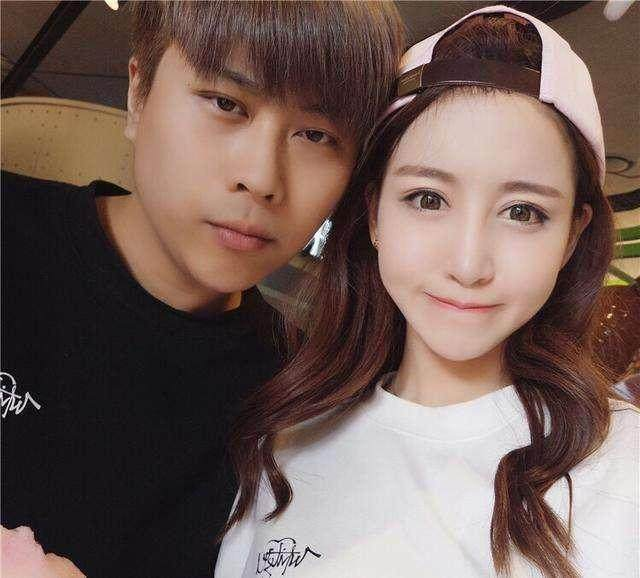
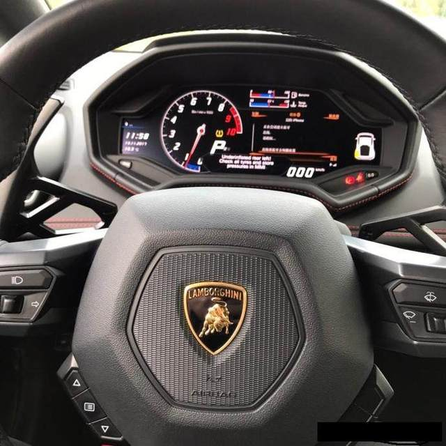
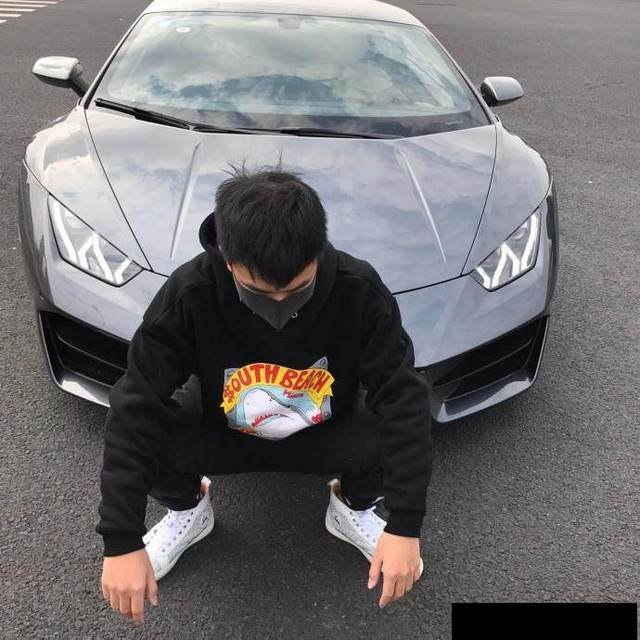
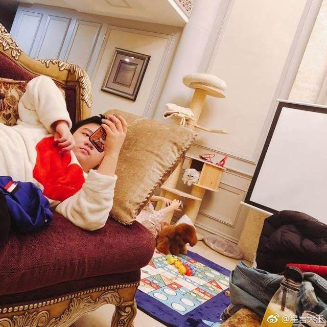
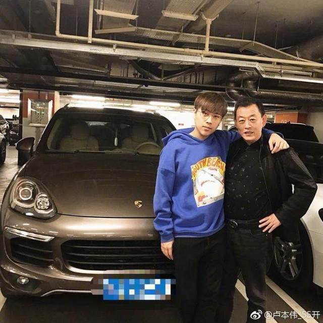
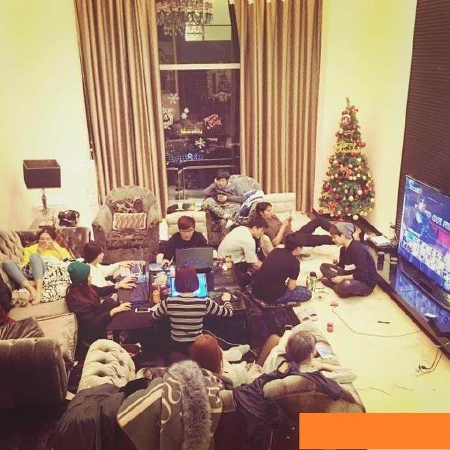

卢本伟个人简介
卢本伟 ，ID为Wh1t3zZ，1993年8月11日出生于香港，前皇族电子竞技俱乐部英雄联盟分部中单，在获得S3全球决赛亚军后退役。
曾获2011TGA成都区冠军
2011TGA总决赛冠军
2011WCG中国区冠军
2013S3全球总决赛中国区冠军
2013S3全球总决赛亚军等荣誉。
中文名 卢本伟 外文名 Wh1t3zZ 别 名 撸本萎
电竞三丑 white 55开
国 籍 中国 民 族 汉族 出生地 香港 出生日期 1993年8月11日
职 业 LOL前职业选手、斗鱼tv主播
主要成就 2013 S3全球总决赛亚军
2013 S3全球总决赛中国区冠军 一区ID 柚柚妹 退役战神卢本伟
直播平台 斗鱼TV
身 高 178cm
体 重 75公斤
血 型 O型
凉于：
2017年12月8日，对于粉丝见面会辱骂事件，卢本伟在直播及微博上对网友道歉。
[1] 2018年1月17日 ，斗鱼直播宣布对平台主播进行处罚，罚款100万元并暂停其直播间。
[2]
2018年2月12日，卢本伟被《焦点访谈》点名，并实施跨平台封禁。

今天说一说，卢本伟在停播以前的身价和财富。卢本伟在某鱼有超过1300万的关注，微博也有700万粉丝，开播自带300万人气热度，一哥的名号不是白来的，这些是他这几年来积累的庞大粉丝基础。连小弟马飞飞在微博都有300多万关注，可能大家不知道300万关注以上的大V每天发发广告，就能赚到一大笔钱。卢本伟直播时说过他的网店月赚百万，不过最近封了。
下面就看看实在一点的豪车！
豪车兰博基尼，不说几百万吧！


豪宅？？


